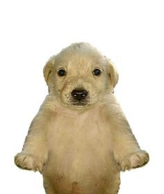
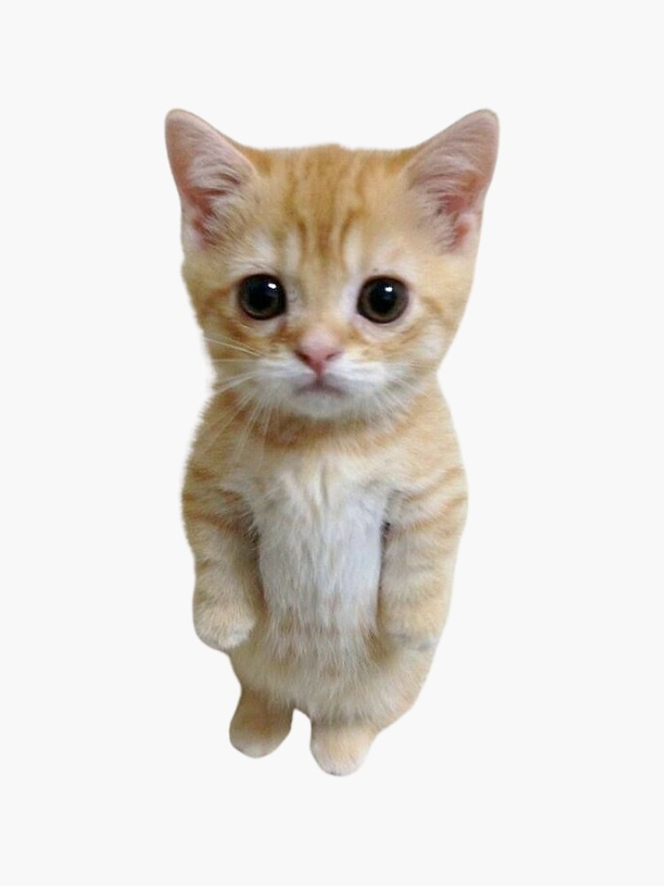
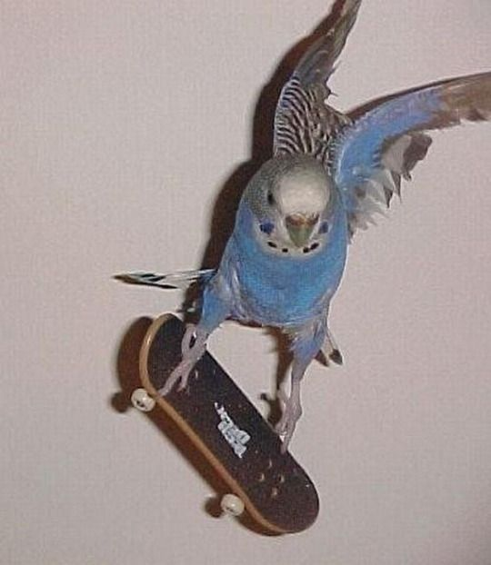
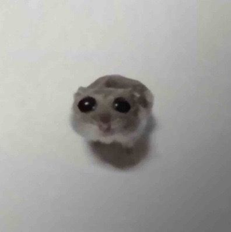
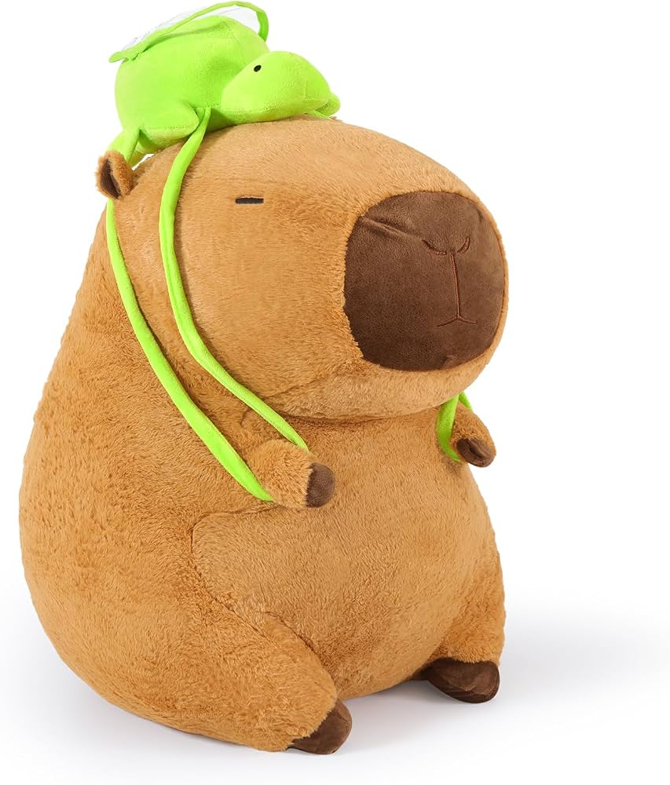
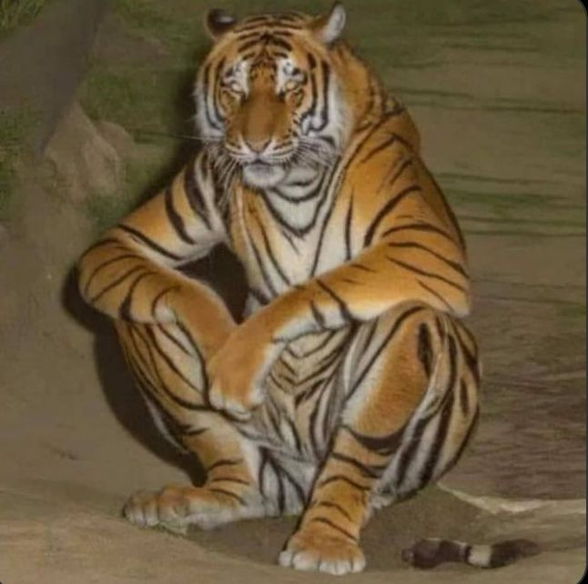
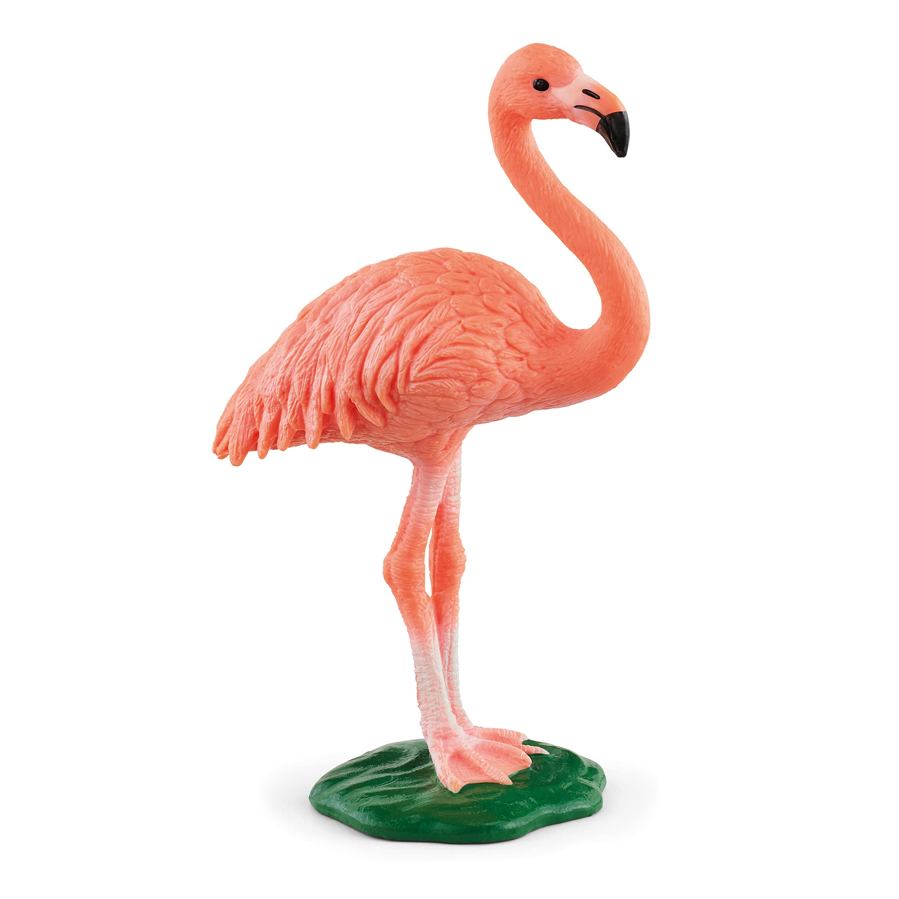
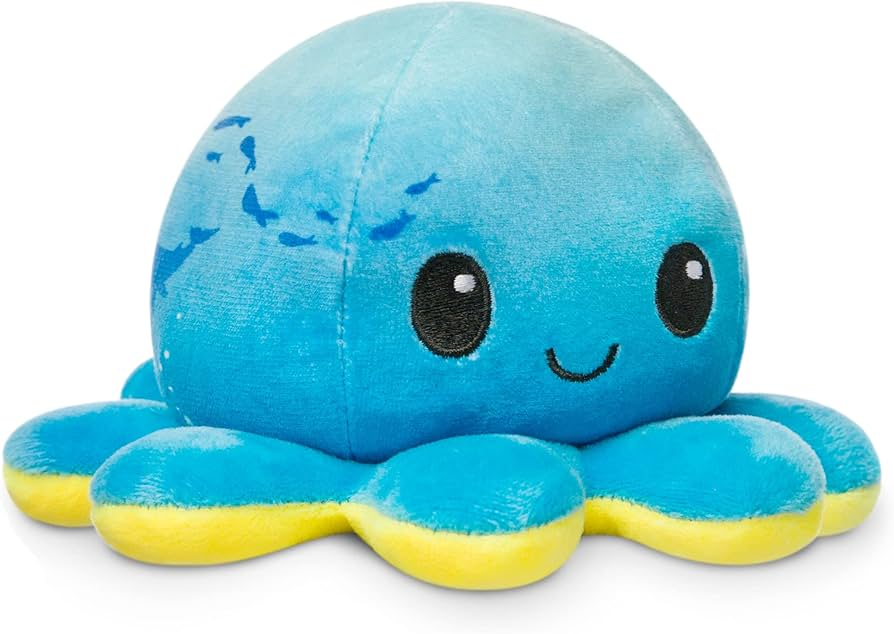

Los animales se clasifican en varios grupos principales según su esqueleto, su alimentación, su nacimiento y su hábitat.
Herbívoros: Comen plantas, hojas y frutos (vacas, jirafas).
Carnívoros: Comen carne de otros animales (leones, tiburones).
Omnívoros: Comen tanto plantas como carne (osos, cerdos).
Ver especies
Carnívoro
El perro (Canis familiaris o Canis lupus familiaris), llamado perro doméstico o can.

Carnívoro/p>
El gato doméstico llamado comúnmente gato, y de forma coloquial cucho, minino, michino o michi.

Omnívoro
El nombre periquito se deriva de la palabra francesa perroquet, que se refleja en algunas grafías más antiguas que todavía se encuentran a veces, como paroquet o paraquet.

Omnívoro
Los cricetinos son una subfamilia de roedores, conocidos comúnmente como hámsteres. Se han identificado diecinueve especies actuales, agrupadas en siete géneros.

Herbívoro
El carpincho, capibara, chigüire, ronsoco o chigüiro, entre otras denominaciones, es una especie de roedor caviomorfo de la familia de los cávidos, nativa de Sudamérica.

Las rayas de los tigres no solo están en su pelo, sino también pintadas directamente en su piel.

Los flamencos nacen de color gris, pero cambian a un tono rosado por la comida que consumen.

Los pulpos y otros moluscos tienen sangre de color azul porque usan un compuesto llamado hemocianina.